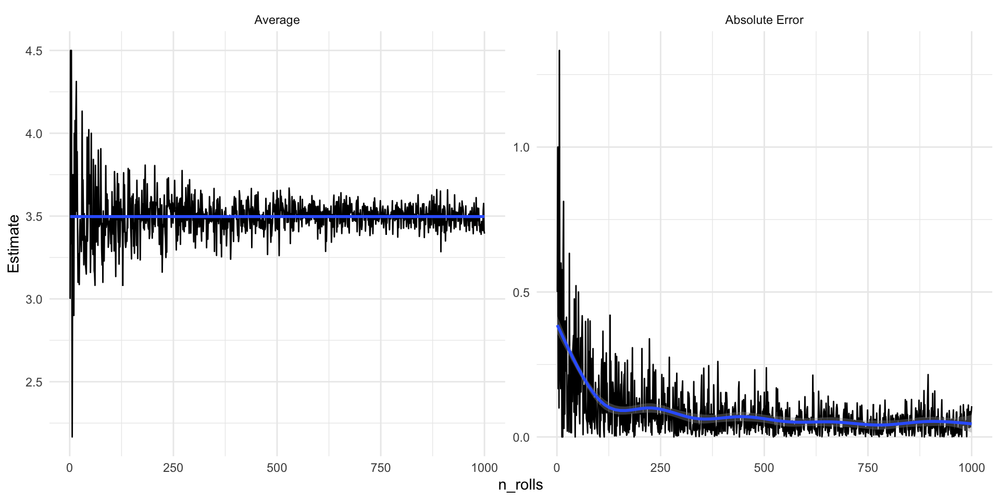
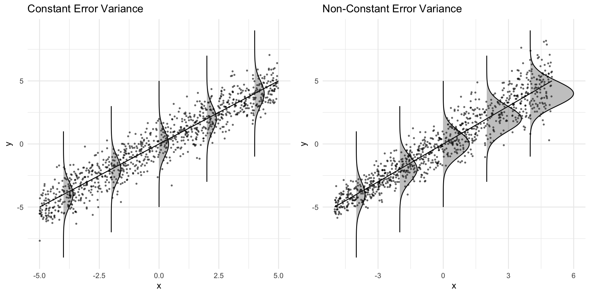

Probability distributions allow us to describe different data generating processes and quantify uncertainty about estimates
The Law of Large Numbers tells us that the mean of a sample converges to the mean of population as the size of the sample grows larger.
The Central Limit Theorem tells us that distribution of sample means of a given sample size converges in distribution to a Normal probability distribution
Standard Errors describe the width of a sampling distribution and allow us to assess the statistical significance of regression estimates
Annoucements: Assignment 2
Feedback on Assignment 2 posted to Canvas
Proposal:
Substitute Lab 11 with in class workshops on Final Project
This will count as both your grade on Assignment 3 and the Lab for that week
Assignment 3 no longer due April 6, but you can upload questions for feedback this weekend.
Setup: Packages for today
## Pacakges for todaythe_packages <-c(## R Markdown"kableExtra","DT","texreg","htmltools",## Tidyverse"tidyverse", "lubridate", "forcats", "haven", "labelled",## Extensions for ggplot"ggmap","ggrepel", "ggridges", "ggthemes", "ggpubr", "patchwork","GGally", "scales", "dagitty", "ggdag", "ggforce",# Data "COVID19","maps","mapdata","qss","tidycensus", "dataverse", # Analysis"DeclareDesign", "easystats", "zoo")## Define a function to load (and if needed install) packagesipak <-function(pkg){ new.pkg <- pkg[!(pkg %in%installed.packages()[, "Package"])]if (length(new.pkg)) install.packages(new.pkg, dependencies =TRUE)sapply(pkg, require, character.only =TRUE)}## Install (if needed) and load libraries in the_packagesipak(the_packages)
A Poisson random variable describes the probability of observing a discrete number of events in a fixed period of time given that occur with a fixed average rate of \(\lambda\)
A Normal distribution is a continuous random variable defined by two parameters: a location parameter \(\mu\) that determines the center of a distribution and a scale parameter \(\sigma\) that determines the spread of a distribution
Distributions that involve summing random variables (with finite variance…) say, like the distribution of E[Y|X]) will tend towards normal distributions
The Law of Large Numbers
The Law of Large Numbers (Intuitive)
Suppose we wanted to know the average height of our class.
Pick 1 person at random and use this as our estimate of the average
It would be a pretty bad estimate (it would vary a lot from person to person), but it would be an unbiased estimate
How would we improve our estimate?
The Law of Large Numbers (Intuitive)
Suppose we increased our sample size from N=1 to N = 5.
Now our estimate reflects the average of 5 people’s heights as opposed to just 1. Both are are unbiased estimates of the truth, but the N=5 sample has a lower variance.
Now suppose we took a sample of size N = N-1. That is we measured everyone except one person. Our estimate will be quite close to the truth, varying slightly based on the height of the person left out.
The Law of Large Numbers (Intuitive)
Finally, suppose we took a sample of size N = 32 (e.g. the class size). Since our sample is the population, our estimate will be exactly equal to to the population.
Each sample will give us the same “true” value. That is, it will not vary at all.
The idea that as the sample size increases, the distance of a sample mean from the population mean \(\mu\) goes to 0 is called the Law of Large Numbers
The (Weak) Law of Large Numbers (Formally)
Let \(X_1, X_2, \dots\) be independent and identically distributed (i.i.d.) random variables with mean \(\mu\) and variance \(\sigma^2\).
Then for every \(\epsilon>0\), as the sample size increases (1), the distance of a sample mean from the population mean \(\mu\) (2) goes to 0 (3).
\[\overbrace{Pr(\left|\frac{X_1+\dots+X_n}{n}-\mu\right| > \epsilon)}^{\text{2. The distance of the sample mean from the truth}} \overbrace{\to 0}^{\text{3. Goes to 0}} \underbrace{\text{ as }n \to \infty}_{\text{1. As the sample size increases}}\]
Let our sample size, \(N\) be the number of times we roll a die as our
If \(N=1\), we could get a 1, 2, 3, 4, 5, or 6. which would be pretty far from our expected value of 3.5
Simulating the LLN
If we rolled the die two times and took an average, we could still get an value of 1 or 6 for average, but values closer to our expected value of 3.5, happen more often
# Calculate the average from 2 rowstable(rowMeans(expand.grid(1:6, 1:6)))
As we increase our sample size (roll the die more times), the LLN says the chance that our sample average is far from the truth \((p(\left|\frac{X_1+\dots+X_n}{n}-\mu\right| > \epsilon))\), gets vanishingly small.
Let’s write some code to simulate this process
# Create a 6-sided diedie <-1:6# Create function to simulate rolling a die N timesroll_fn <-function(n) { rolls <-data.frame(rolls =sample(die, size = n, replace =TRUE))# summarize rolls df <- rolls %>%summarise(# number of rollsn_rolls =n(),# number of times 1 was rolledones =sum(rolls ==1),# number of times 2 was rolled, etc..twos =sum(rolls ==2),threes =sum(rolls ==3),fours =sum(rolls ==4),fives =sum(rolls ==5),sixes =sum(rolls ==6),# Average of all our rollsaverage =mean(rolls),# Absolute difference between averages and rollsabs_error =abs(3.5-average) )# Return summary df df}# Holder for simulatoinsim_df <-NULL# Set seedset.seed(123)for(i in1:1000){ sim_df <-rbind(sim_df,roll_fn(i) )}fig_lln <- sim_df %>%pivot_longer(cols =c("average", "abs_error"),names_to ="Measure",values_to ="Estimate" ) %>%mutate(Measure =ifelse(Measure =="average","Average","Absolute Error") %>%factor(., levels =c("Average","Absolute Error")) ) %>%ggplot(aes(n_rolls, Estimate))+geom_line()+geom_smooth()+facet_wrap(~Measure,scales ="free_y")+theme_minimal()

Proving the Weak LLN
A proof of the LLN is as follows:
First define \(U\) such that its a sample mean for sample of size \(n\)
\[U=\frac{X_1+\dots +X_n}{n}\]
Proving the Weak LLN
Then show that the sample mean, \(U\) is an unbiased estimator of the population mean \(\mu\)
So the LLN tells us that as our sample size grows, an unbiased estimator like the sample average, will get increasingly close to the to the “true” value of the population of mean.
If we took a bunch of samples of the same size and calculated the mean of each sample:
the distribution of those sample means (the sampling distribution) would be centered around the truth (because the estimator is unbiased).
the width of the distribution (its variance) would decrease as the sample size increased
The Central Limit Theorem tells us about the shape of that sampling distribution.
Z-scores and Standardization
Let \(X\) be a random variable with mean \(\mu\) and standard deviation \(\sigma\).
Define a new R.V. \(Z\) as the standardization of \(X\):
\[Z=\frac{X-\mu}{\sigma}\]
Where Z has \(\mu=0\) and \(\sigma=1\).
Notation for the CLT
Let \(X_1,X_2,\dots,X_n\) be independent and identically distributed RVs with mean \(\mu\) and standard deviation \(\sigma\).
Basically: the expected value and variance of the sum is just \(n\) times the population parameters (the true values for the distribution).
Since the mean is just the sum divided by the sample size, the expected value of the mean is equal to the population value and the variance and standard deviations of the mean are decreasing in \(n\).
Finally, we can define \(Z\) to in terms of either \(S\) or \(\bar{X}\)
The distribution of means\((\bar{X_n})\) from almost any distribution \(X\) is approximately Normal (converges in distribution), but with a smaller variance than (\(\sigma^2/n\))
Proof: Several ways, but requires a little more math than is required for this course
CLT: Why it matters
Why is this result so important?
Lots of our questions come of the form, how does a typical value of Y vary with X.
We may not know the true underlying distribution of Y
But the CLT says we can often approximate the distribution of a typical value of Y conditional on X\((E[Y|X])\) using a normal (or related) distributions.
Knowing these distribution, in turn allows us to conduct statistical inference
from two very not Normal populations (Poison(\(\lambda = 5\)), Weird mixture of distributions)
Calculating the means from each sample
Plotting the sampling distributions of sample means
Approximating the distribution of sample means with Normal distributions
Tip
Even if random variable’s distribution is not at all Normal, the distribution of sample means often can be reasonably approximated by Normal Distributions
So we see that our sampling distributions are centered on the truth, and as the sample size increases, the width of the distribution decreases (Law of Large Numbers)
The shapes of distributions of sample means can be approximated by a Normal Distribution \(\bar{X} \sim N(\mu, \sigma^2/n)\)
Lab 8 and Standard Errors
Lab 8
Lab 8 got into the weeds on standard errors, asking you to use lm_robust() to calculate robust clustered standard errors
A standard error is simply the standard deviation of a theoretical sampling distribution
A sampling distribution describes the range of estimates we could have seen
Standard errors are key to quantifying uncertainty and making claims about statistical significance
Errors and Residuals
Errors (\(\epsilon\)) represent the difference between the outcome and the true mean:
\[
\begin{aligned}
y = X\beta + \epsilon\\
\epsilon = y -X\beta
\end{aligned}
\] Residuals (\(\hat{\epsilon}\)) represent the difference between the outcome and our estimate
\[
\begin{aligned}
y = X\beta + \hat{\epsilon}\\
\hat{\epsilon} = y -X\hat{\beta}
\end{aligned}
\]
Variance of Regression Coefficients depends on the errors
\(\sigma^2(X'X)^{-1}\) is no longer an unbiased estimator for \(Var[\hat{\beta}]\)
Our statistical tests using \(\sigma^2(X'X)^{-1}\) to calculate standard errors will not live up to their promised error rates and coverage probabilities (more to come)
\(\hat{\beta}\), however are still unbiased estimates of \(\beta\)
Constant Error Variance

Robust Standard Errors
Robust standard errors attempt to estimat \(\sigma_i^2\) using the residuals from the model \(\hat{\epsilon_i}\) and additional adjustments to yield robust standard errors that are consistent, even when there is heteroskedasiticity.
Clustered standard errors go a step further, summing up the residuals within clusters (groups) in the data.
Replicating Grumbach and Hill
Ok, let’s revisit some of the questions from lab 8
Summary
Probability distributions allow us to describe different data generating processes and quantify uncertainty about estimates
The Law of Large Numbers tells us that the mean of a sample converges to the mean of population as the size of the sample grows larger.
The Central Limit Theorem tells us that distribution of sample means of a given sample size converges in distribution to a Normal probability distribution
Standard Errors describe the width of a sampling distribution and allow us to assess the statistical significance of regression estimates